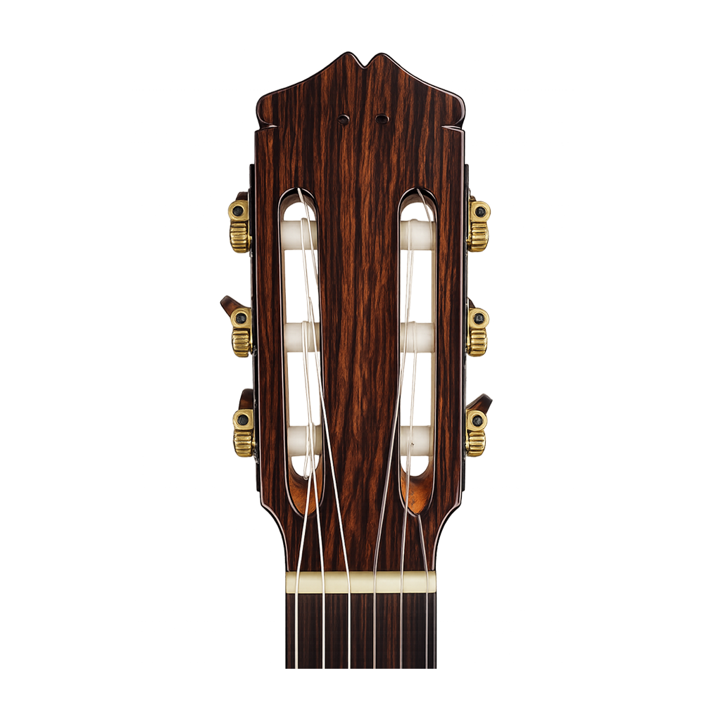
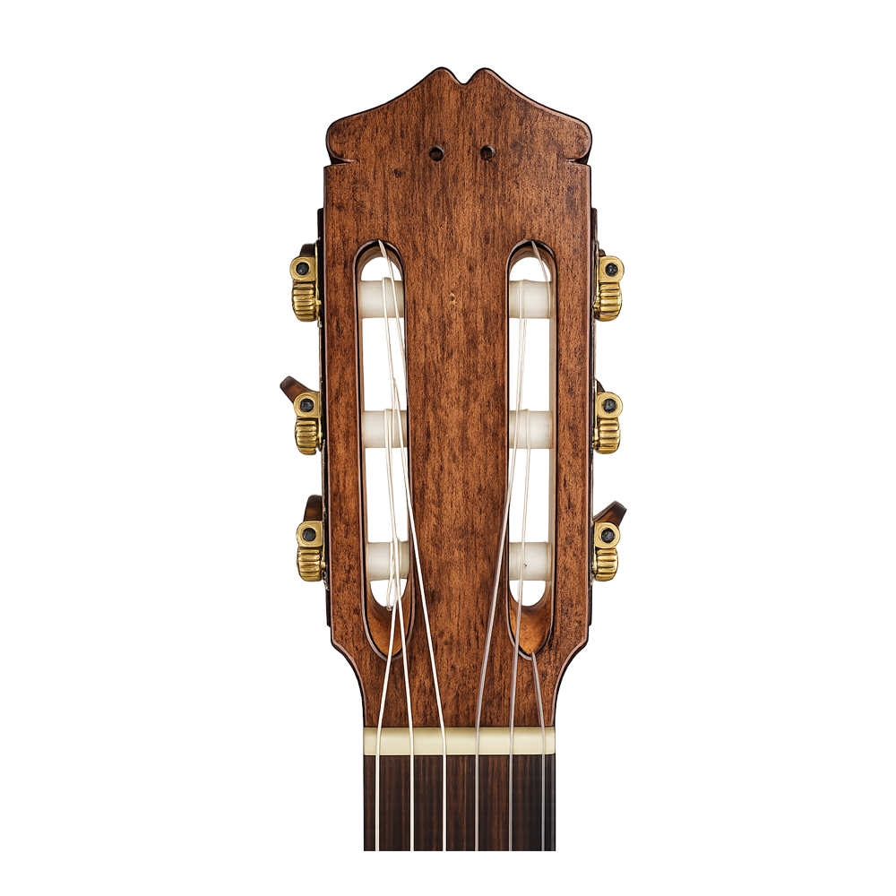
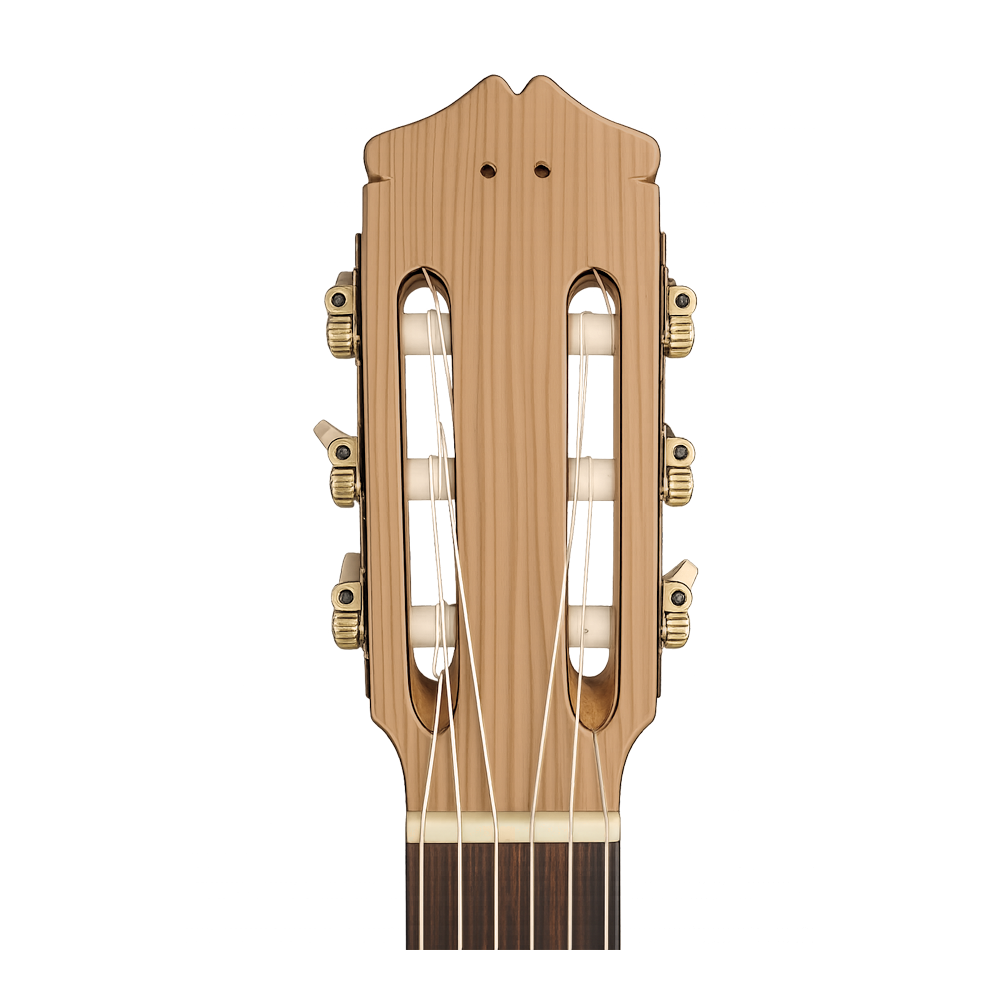
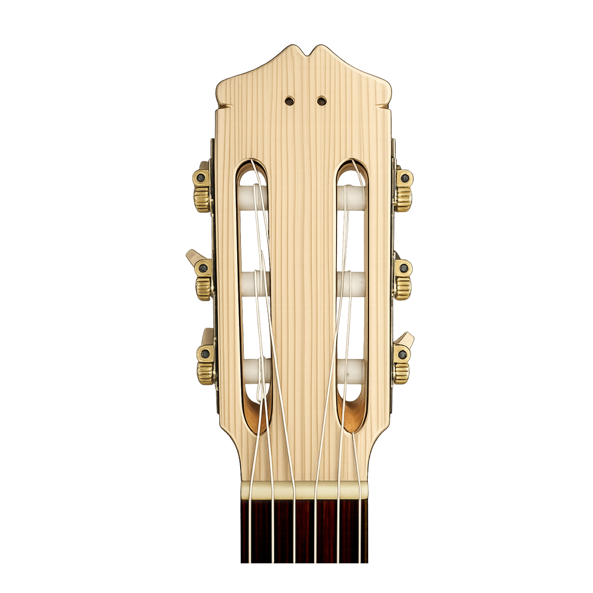

Cada madera se elige por su carácter sonoro: densidad, resonancia y estabilidad. No hay dos piezas que sean exactamente iguales.


Construcción artesanal y restauración
profesional para dejar un legado.
¿QUIENES SOMOS?
Cada traste nivelado a mano, cada veta elegida por su sonido.
Pocos instrumentos al año: escasez real por capacidad de taller, no por estrategia.
Madera viva y bobinado manual: tu tono no existe en ningún catálogo.
DESTACADOS EN LA PERFECCIÓN
Cada madera se elige por su carácter sonoro: densidad, resonancia y estabilidad. No hay dos piezas que sean exactamente iguales.
El instrumento se dibuja desde el músico hacia afuera. Escala, ergonomía y estética se resuelven de forma conjunta antes del primer corte.

Cientos de horas de ensamble preciso. Cada unión, cada curva y cada traste define cómo va a responder el instrumento a futuro.

La laca no solo protege: deja respirar la madera viva y potencia la resonancia natural. El pulido final es también un acto de escucha.

ANATOMÍA BASICA DE LA GUITARRA
Descubrí cómo cada pieza define el sonido, la respuesta y la personalidad de un instrumento único.

Tapa armónica en cedro o abeto, aros doblados a fuego y fondo en dos piezas. Bracing en abanico y lacado nitrocelulósico de curado lento.
Caoba hondureña tallada a mano con alma de refuerzo interna. Diapasón en ébano o palisandro, trastes nivelados y pulidos uno por uno.
Paleta plana con mecanismos por lado y cejuela de hueso tallada a medida. Ángulo de quiebre calculado para una afinación estable.
¿COMO NOS MANEJAMOS?
Definimos juntos el instrumento: estilo, escala, maderas y presupuesto.
Análisis técnico del músico y sus necesidades reales de sonido.
Propuesta detallada sin sorpresas: materiales, tiempos y costo total.
Trabajo artesanal, con actualizaciones periódicas del proceso.
Puesta a punto final y revisión profesional antes de que el instrumento llegue a tus manos.
NUESTROS CURSOS

Construís tu propia guitarra clásica de principio a fin, aprendiendo cada etapa.

Técnicas profesionales para diagnosticar y reparar instrumentos acústicos y eléctricos.

Construís tu propia guitarra eléctrica sólida o semi-hollow, incluyendo electrónica.
Construir un instrumento para toda la vida significa que no existen detalles menores.
Conoce nuestros cursosFormando luthiers y construyendo instrumentos de forma artesanal.
Personas que aprendieron el oficio y hoy siguen construyendo.
Guitarras y instrumentos armados a mano, uno por uno.
Nuestros instrumentos suenan en distintos países del mundo.
MATERIALES SELECCIONADOS
Transformamos maderas nobles en el alma acústica de tu instrumento, para crear un sonido único

PALISANDRO

PROPIEDADES

ALGARROBO

PROPIEDADES

CIPRÉS

PROPIEDADES

ABETO

PROPIEDADES
MEJORES MOMENTOS EN EL TALLER
Luz natural, banco de trabajo. Aquí empieza todo.
Prensas en frío. 24 horas de silencio y presión exacta.
Gubias y formones. Cada virucha es una decisión sonora.
Nitrocelulosa de curado lento. La última piel del instrumento.
RECOMENDACIONES DE ALUMNOS
"Aprendí a escuchar la madera. El proceso de construcción me cambió la forma de tocar."

Martín Rosas
Guitarrista profesional
"Cada lección fue una revelación. No imaginé que aprendería tanto en tan poco tiempo."

Luis Cáceres
Alumno, Ciclo 2024
"La devolvió mejor de lo que era cuando salió de fábrica. Un trabajo impecable."

Diego Ferreira
Músico de sesión
"El instrumento que construí en el taller suena mejor que cualquier guitarra que compré."

Silvia Torres
Alumna, Ciclo 2026
"Recomiendo el curso a cualquier músico que quiera entender su instrumento de verdad."

Carla Medina
Docente de música
/ 12
No. Los cursos iniciales están diseñados para personas sin experiencia previa. Solo necesitás ganas de aprender y compromiso con el proceso.
Sí. Maderas, herrajes, lacas y herramientas del taller están incluidos en el costo del curso. Al terminar, te llevás el instrumento que construiste.
Sí. Trabajamos con músicos que necesitan un instrumento construido específicamente para su forma de tocar. Escribinos para coordinar una consulta.
Sí. Hacemos restauraciones y reparaciones de guitarras acústicas, clásicas y eléctricas. Cada trabajo incluye diagnóstico previo y presupuesto sin compromiso.
Depende del curso. Los programas de construcción tienen carga horaria semanal de 4 a 6 horas, distribuidas en dos o tres encuentros presenciales.
¿Tenés una idea, una duda o querés sumarte a una camada? Escribinos directo y te respondemos.